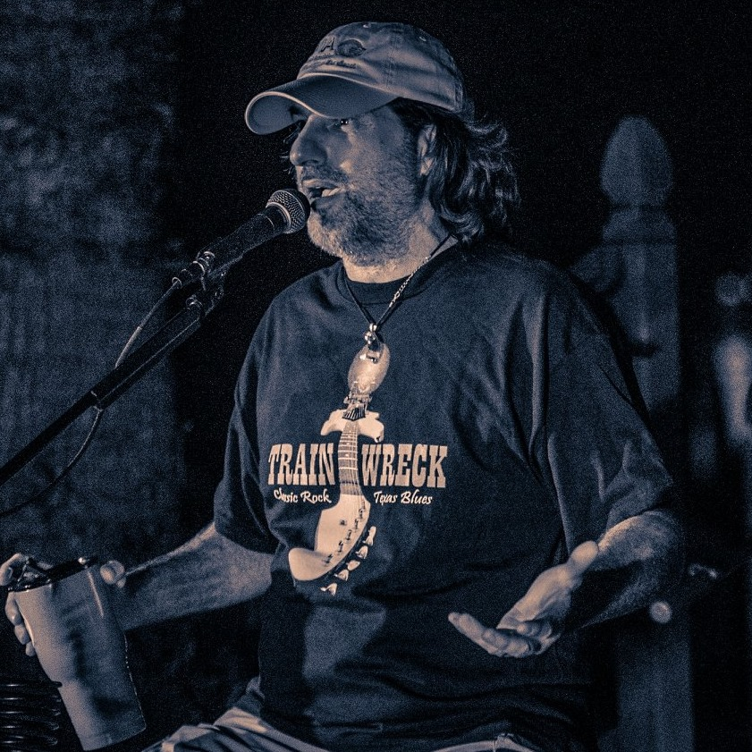

ABOUT / CONTACT

Eric J. Babin
Personal Life
Born in Houma Louisiana 1966
Moved to Sherman Texas 1971
Joined United States Navy 1991
Retired from United States Navy 2017
Full time travel of United States 2017-2020
Moved to Lakehills Texas 2020
Navy Life / Duty Assignments
- Boot Camp San Diego 1991
- USS Antrim Jacksonville Florida 1992-1993
- USS Belleu Wood Sasebo Japan 1994-1996
- USS Jarrett San Diego 1997-1998
- Naval Recruiting District San Antonio Texas 1999-2001
- USS Dubuque San Diego California 2002-2003
- USS Peleliu San Diego California 2004-2005
- USS Ronald Reagan San Diego California 2006-2008
- Camp Taji Iraq 2009
- COMNAVWINGPAC North Island California 2010-2011
- Camp Lemoniar Djibouti Africa 2012
- Naval Air Training Command Pensacola Florida 2013-2017
- Retired June 2017
Business Ventures

Owner / operator of the #1 Trop Rock radio station in the country, Radio Trop Rock.
Click HERE to play Radio Trop Rock
Visit RADIO TROP ROCK Website by clicking HERE
Awards
2017 TRMA Radio Station of the Year
2017 TRMA Radio Show of the Year
2018 TRMA Radio Station of the Year
2018 TRMA Radio Show of the Year (live)
2018 TRMA Radio Show of the Year (Pre-recorded)
2018 People's Choice Radio Show of the Year
2018 People's Choice Trop Rock DJ Personality of the Year
2019 TRMA Radio Station of the Year
2019 TRMA Radio Show of the Year (live)
2019 TRMA Radio Show of the Year (Pre-recorded)
2019 TRMA Business Professional of the Year
2019 People's Choice Radio Show of the Year
2019 People's Choice Trop Rock DJ Personality of the Year
2020 TRMA Radio Station of the Year
2020 TRMA Radio Show of the Year (live)
2020 TRMA Radio Show of the Year (Pre-recorded)
Projects / Events
Pardi Gras - New Orleans LA
Lone Star Luau - Marble Falls TX
Music on the Bay - Tampa Bay FL
New England Parrot Head Convention - Boston MA
Summer Solstice - Branson MO
Trop Rockin' Ozarks Fest - Lake of the Oarks MO
Casa Brown House Concerts - Santa Fe NM
Casa Tortooga Concerts - San Diego CA
Liki Tiki Festival - Martinville NJ
Trop Rockin' River Fest - Tulsa OK
Laid Back Attack - Seattle WA
Nash Bash - Nashville TN
Pirates Cove Music Concerts - Granbury TX
Summer CHILL - Chicago IL
PHINS to the West - Phoenix AZ
Island Fever Showcase - Clear Lake IA
Margeeritaville Concerts - Oklahoma City OK
Last Mango Music Festival - Gulf Shores AL
Stars Fell on Alabama - Orange Beach AL
Shake N Bake Concerts - Cabot AR
Frank Brown Songwriters Invitatinal - Pensacola FL
Meet Me In The Keys - Key West FL
Gulf Coast Days - New Orleans LA
Pirates & Poets Songwriter Showcase - Port Aransas TX
The Habitat Concerts - Bradenton FL
Flip Flop Stock - Orlando FL
Karavan to the Keys - San Antonio TX to Key West FL
Meeting of the Minds - Key West FL
Another Voyage to Paradise - St. Martin BVI
Living in a Postcard - Jost Van Dyke BVI
Sail Raisers - Playa Del Carmen MX
Contact information:
Eric J. Babin
 Email: Eric@RadioTropRock.com>
Email: Eric@RadioTropRock.com>
 Phone: 619-240-4601
Phone: 619-240-4601
Mailing Address: PO Box 63305 Pipe Creek TX 78063